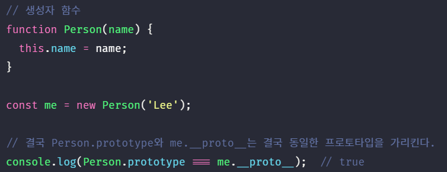
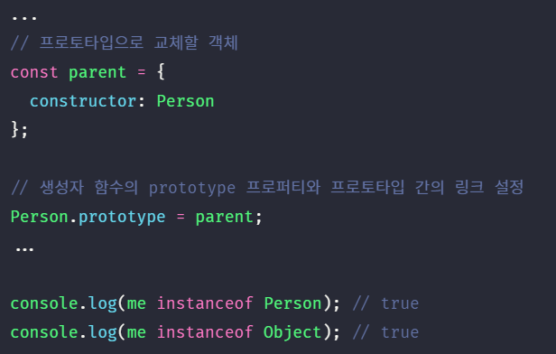

자바스크립트는 명령형, 함수형, 프로토타입 기반 객체지향 프로그래밍을 지원하는 멀티 패러다임 프로그래밍 언어다.
간혹 C++, Java와 같은 클래스 기반 객체지향 프로그래밍 언어의 특징인 클래스와 상속, 캡슐화를 위한 키워드 public, private, protected 등이 없어서 자바스크립트는 객체지향 언어가 아니라고 오해(자바스크립트는 가장 많은 오해를 받는 언어다)하는 경우도 있다. 하지만 자바스크립트는 클래스 기반 객체지향 프로그래밍 언어보다 효율적이며 더 강력한 객체지향 프로그래밍 능력을 지니고 있는 프로토타입 기반의 객체지향 프로그래밍 언어이다.
- 클래스
- ES6에서 클래스가 새롭게 도입되었다. 하지만 ES6의 클래스가 기존의 프로토타입 기반 객체지향 모델을 폐지하고 새로운 객체지향 모델을 제공하는 것은 아니다. 사실 클래스도 함수이며 기존 프로토타입 기반 패턴의 문법적 설탕이라고 볼 수 있다. 하지만 클래스와 생성자 함수가 모두 프로토타입 기반의 인스턴스를 생성하지만 정확히 동일하게 동작하지는 않는다. 클래스는 생성자 함수보다 엄격하며 클래스는 생성자 함수에서는 제공하지 않는 기능도 제공한다. 따라서 클래스를 프로토타입 기반 객체 생성 패턴의 단순한 문법적 설탕이라고 보기 보다는 새로운 객체 생성 메카니즘으로 보는 것이 보다 합당하다고 할 수 있다. 클래스에 대해서는 25장에서 자세히 살펴보자!
자바스크립트는 객체 기반의 프로그래밍 언어이며 자바스크립트를 이루고 있는 거의 “모든 것”이 객체이다. 원시 타입의 값을 제외한 나머지 값들(함수, 배열, 정규표현식 등)은 모두 객체이다.
1. 객체지향 프로그래밍 #
객체지향 프로그래밍은 프로그램을 명령어 또는 함수의 목록으로 보는 전통적인 명령형 프로그래밍의 절차지향적 관점에서 벗어나 여러 개의 독립적 단위, 즉 객체들의 집합으로 프로그램을 표현하려는 프로그래밍 패러다임을 말한다.
객체지향 프로그래밍은 실세계의 실체(사물이나 개념)를 인식하는 철학적 사고를 프로그래밍에 접목하려는 시도에서 시작한다. 실체는 특징이나 성질을 나타내는 속성을 가지고 있고, 이를 통해 실체를 인식하거나 구별할 수 있다.
예를 들어, 사람은 이름, 주소, 성별, 나이, 신장, 체중, 학력, 성격, 직업 등 다양한 속성을 갖는다. 이때 “이름이 아무개이고 성별은 여성이며 나이는 20세인 사람”과 같이 속성을 구체적으로 표현하면 특정한 사람을 다른 사람과 구별하여 인식할 수 있다.
이러한 방식을 프로그래밍에 접목시켜보자. 사람에게는 다양한 속성이 있으나 우리가 구현하려는 프로그램에서는 사람의 “이름”, “주소”라는 속성에만 관심이 있다고 가정하자. 이처럼 다양한 속성 중에서 프로그램에 필요한 속성만을 간추려 내어 표현하는 것을 추상화라 한다.
“이름”과 “주소”이라는 속성을 갖는 person이라는 객체를 자바스크립트로 표현해 보면 아래와 같다.
이때 프로그래머는 이름과 주소 속성으로 표현된 객체인 person을 다른 객체와 구별하여 인식할 수 있다. 이처럼 속성을 통해 여러 개의 값을 하나의 단위로 구성한 복합적인 자료 구조를 객체라 하며 객체 지향 프로그래밍은 독립적인 객체의 집합으로 프로그램을 표현하려는 프로그래밍 패러다임이다.
이번에는 원이라는 개념을 객체로 만들어보자. 원에는 반지름이라는 속성이 있다. 이 반지름을 가지고 원의 지름, 둘레, 넓이를 구할 수 있다. 이때 반지름은 원의 상태를 나타내는 데이터이며 원의 지름, 둘레, 넓이를 구하는 것은 동작이다.

이처럼 객체지향 프로그래밍은 객체의 상태(state)를 나타내는 데이터와 상태 데이터를 조작할 수 있는 동작(behavior)을 하나의 논리적인 단위로 묶어 생각한다. 따라서 객체는 상태 데이터와 동작을 하나의 논리적인 단위로 묶은 복합적인 자료 구조라고 할 수 있다. 객체의 상태 데이터를 프로퍼티(property), 동작을 메소드(method)라 부른다.
각각의 객체는 고유의 기능을 갖는 독립적인 부품으로 볼 수 있지만 자신의 고유한 기능을 수행하면서 다른 객체와 관계성을 갖을 수 있다. 다른 객체와 메시지를 주고 받거나 데이터를 처리할 수도 있다. 또는 다른 객체의 상태 데이터나 동작을 상속받아 사용하기도 한다.
2. 상속과 프로토타입 #
상속은 객체지향 프로그래밍의 핵심 개념으로 어떤 객체의 프로퍼티 또는 메소드를 다른 객체가 상속받아 그대로 사용할 수 있는 것을 말한다.
자바스크립트는 프로토타입을 기반으로 상속을 구현하여 불필요한 중복을 제거한다. 중복을 제거하는 방법은 기존의 코드를 적극적으로 재사용하는 것이다. 코드 재사용은 개발 비용을 현저히 줄일 수 있는 잠재력이 있으므로 매우 중요하다. 아래 예제를 확인해보자.

생성자 함수는 동일한 프로퍼티(메소드 포함) 구조를 갖는 객체를 여러 개 생성할 때 유용하다. 하지만 위 예제의 생성자 함수는 문제가 있다.
Circle 생성자 함수가 생성하는 모든 객체(인스턴스)는 radius 프로퍼티와 getArea 메소드를 갖는다. radius 프로퍼티 값은 일반적으로 인스턴스마다 다르다.(같은 상태를 갖는 여러 개의 인스턴스가 필요하다면 radius 프로퍼티 값이 같을 수도 있다.) 하지만 getArea 메소드는 모든 인스턴스가 동일한 내용의 메소드를 사용하므로 하나만 생성하여 모든 인스턴스가 공유하는 것이 바람직하다. 그런데 Circle 생성자 함수는 인스턴스를 생성할 때마다 getArea 메소드를 중복 생성하고 모든 인스턴스가 중복 소유한다.

이처럼 동일한 생성자 함수에 의해 생성된 모든 인스턴스가 동일한 메소드를 중복 소유하는 것은 메모리를 불필요하게 낭비한다. 또한 인스턴스를 생성할 때마다 메소드를 생성하므로 퍼포먼스에도 악영향을 준다. 만약 10개의 인스턴스를 생성하면 내용이 동일한 메소드도 10개 생성된다.
상속을 통해 불필요한 중복을 제거해 보자. 자바스크립트는 프로토타입을 기반으로 상속을 구현한다.

Circle 생성자 함수가 생성한 모든 인스턴스는 자신의 프로토타입, 즉 상위(부모) 객체 역할을 하는 Circle.prototype의 모든 프로퍼티와 메소드를 상속 받는다.
getArea 메소드는 단 하나만 생성되어 프로토타입인 Circle.prototype의 메소드로 할당되어 있다. 따라서 Circle 생성자 함수가 생성하는 모든 인스턴스는 getArea 메소드를 상속받아 사용할 수 있다. 즉, 자신의 상태를 나타내는 radius 프로퍼티만을 개별적으로 소유하고 내용이 동일한 메소드는 상속을 통해 공유하여 사용하는 것이다.
상속은 코드의 재사용이란 관점에서 매우 유용하다. 생성자 함수가 생성할 모든 인스턴스가 공통적으로 사용할 프로퍼티나 메소드를 프로토타입에 미리 구현에 놓으면 생성자 함수가 생성할 모든 인스턴스는 별도의 구현없이 상위(부모) 객체인 프로토타입의 자산을 공유하여 사용할 수 있다.
3. 프로토타입 객체 #
프로토타입 객체(또는 줄여서 프로토타입)란 객체 지향 프로그래밍의 근간을 이루는 객체간 상속을 구현하기 위해 사용된다. 프로토타입은 어떤 객체의 상위(부모) 객체의 역할을 하는 객체로서 다른 객체에 공유 프로퍼티(메소드 포함)를 제공한다. 프로토타입을 상속받은 하위(자식) 객체는 상위 객체의 프로퍼티를 자신의 프로퍼티처럼 자유롭게 사용할 수 있다.
모든 객체는 [[Prototype]]이라는 내부 슬롯을 가지며 이 내부 슬롯의 값은 프로토타입의 참조(null인 경우도 있다)이다. [[Prototype]]에 저장되는 프로토타입은 객체 생성 방식에 의해 결정된다. 즉, 객체가 생성될 때 객체 생성 방식에 따라 프로토타입이 결정되고 [[Prototype]]에 저장된다.
예를 들어, 객체 리터럴에 의해 생성된 객체의 프로토타입은 Object.prototype이고 생성자 함수에 의해 생성된 객체의 프로토타입은 생성자 함수의 prototype 프로퍼티에 바인딩되어 있는 객체이다.
모든 객체는 하나의 프로토타입을 갖는다.([[Prototype]] 내부 슬롯의 값이 null인 객체는 프로토타입이 없다.) 그리고 모든 프로토타입은 생성자 함수와 연결되어 있다. 즉, 객체와 프로토타입과 생성자 함수는 서로 연결되어 있다.

[[Prototype]] 내부 슬롯에는 직접 접근할 수 없지만, 위 그림처럼 객체는 __proto__ 접근자 프로퍼티를 통해 자신의 프로토타입, 즉 자신의 [[Prototype]] 내부 슬롯이 가리키는 프로토타입에 간접적으로 접근할 수 있다. 그리고 프로토타입은 자신의 constructor 프로퍼티를 통해 생성자 함수에 접근할 수 있고, 생성자 함수는 자신의 prototype 프로퍼티를 통해 프로토타입에 접근할 수 있다.
3.1. __proto__ 접근자 프로퍼티 #
모든 객체는 __proto__ 접근자 프로퍼티를 통해 자신의 프로토타입, 즉 [[Prototype]] 내부 슬롯에 간접적으로 접근할 수 있다. 아래 예제를 크롬 브라우저의 콘솔에서 출력해보자.
const person = {name: 'Lee'};

위 그림의 빨간 박스로 표시한 것이 person 객체의 프로토타입인 Object.prototype이다. 이는 __proto__ 접근자 프로퍼티를 통해 person 객체의 [[Prototype]] 내부 슬롯이 가리키는 객체인 Object.prototype에 접근한 결과를 크롬 브라우저가 콘솔에 표시한 것이다. 이처럼 모든 객체는 __proto__ 접근자 프로퍼티를 통해 프로토타입을 가리키는 [[Prototype]] 내부 슬롯에 접근할 수 있다.
__proto__는 접근자 프로퍼티이다.내부 슬롯은 프로퍼티가 아니다. 따라서 자바스크립트는 원칙적으로 내부 슬롯과 내부 메소드에 직접적으로 접근하거나 호출할 수 있는 방법을 제공하지 않는다. 단, 일부 내부 슬롯과 내부 메소드에 한하여 간접적으로 접근할 수 있는 수단을 제공하기는 한다. [[Prototype]] 내부 슬롯에도 직접 접근할 수 없으며 __proto__ 접근자 프로퍼티를 통해 간접적으로 [[Prototype]] 내부 슬롯의 값, 즉 프로토타입에 접근할 수 있다.
접근자 프로퍼티는 자체적으로는 값을 갖지 않고 다른 데이터 프로퍼티의 값을 읽거나 저장할 때 사용하는 접근자 함수로 구성된 프로퍼티다.

Object.prototype의 접근자 프로퍼티인 __proto__는 getter/setter 함수라고 부르는 접근자 함수를 통해 [[Prototype]] 내부 슬롯의 값, 즉 프로토타입을 취득하거나 할당한다. __proto__ 접근자 프로퍼티를 통해 프로토타입에 접근하면 내부적으로 __proto__ 접근자 프로퍼티의 getter 함수인 get __proto__가 호출된다. __proto__ 접근자 프로퍼티를 통해 새로운 프로토타입을 할당하면 __proto__ 접근자 프로퍼티의 setter 함수인 set __proto__가 호출된다.

__proto__ 접근자 프로퍼티는 상속을 통해 사용된다.
__proto__ 접근자 프로퍼티는 객체가 직접 소유하는 프로퍼티가 아니라 Object.prototype의 프로퍼티이다. 모든 객체는 상속을 통해 Object.prototype.__proto__ 접근자 프로퍼티를 사용할 수 있다.

- Object.prototype
- 모든 객체는 프로토타입의 계층 구조인 프로토타입 체인에 묶여 있다. 자바스크립트 엔진은 객체의 프로퍼티(메소드 포함)에 접근하려고 할 때 해당 객체에 접근하려는 프로퍼티가 없다면 __proto__ 접근자 프로퍼티가 가리키는 링크를 따라 자신의 부모 역할을 하는 프로토타입의 프로퍼티를 순차적으로 검색한다. 프로토타입 체인의 종점, 즉 프로토타입 체인의 최상위 객체는 Object.prototype이며 이 객체의 프로퍼티와 메소드는 모든 객체에게 상속된다.
[[Prototype]] 내부 슬롯의 값, 즉 프로토타입에 접근하기 위해 접근자 프로퍼티를 사용하는 이유는 상호 참조에 의해 프로토타입 체인이 생성되는 것을 방지하기 위함이다. 아래 예제를 살펴보자.

위 예제는 parent 객체를 child 객체의 프로토타입으로 설정한 후, child 객체를 parent 객체의 프로토타입으로 설정하였다. 이러한 코드가 에러없이 정상적으로 처리되면 서로가 자신의 프로토타입이 되는 비정상적인 프로토타입 체인이 만들어 지기 때문에 __proto__ 접근자 프로퍼티는 에러를 발생시킨다.

프로토타입 체인은 단방향 링크드 리스트로 구현되어야 한다. 즉, 프로퍼티 검색 방향이 한쪽 방향으로만 흘러가야 한다. 하지만 위 그림과 같이 순환 참조적인 프로토타입 체인이 만들어지면 프로토타입 체인 종점이 존재하지 않기 때문에 프로토타입 체인에서 프로퍼티를 검색할 때 무한 루프에 빠진다. 따라서 아무런 체크없이 무조건적으로 프로토타입을 교체할 수 없도록 __proto__ 접근자 프로퍼티를 통해 프로토타입에 접근하고 교체하도록 구현되어 있다.
__proto__ 접근자 프로퍼티를 코드 내에서 직접 사용하는 것은 비추천이다.__proto__ 접근자 프로퍼티는 ES5까지 ECMAScript 사양에 포함되지 않은 비표준이었다. 하지만 일부 브라우저에서 __proto__를 지원하고 있었기 때문에 브라우저 호환성을 고려하여 ES6에서 __proto__를 표준으로 채택하였다. 현재 대부분의 브라우저(IE 11 이상)가 __proto__를 지원하고 있다.
하지만 코드 내에서 __proto__를 직접 사용하는 것은 추천하지 않는다. 모든 객체가 __proto__ 접근자 프로퍼티를 사용할 수 있는 것은 아니기 때문이다. 나중에 살펴보겠지만 직접 상속을 통해 아래와 같이 Object.prototype을 상속받지 않는 객체를 생성할 수도 있다.
따라서 프로토타입의 참조를 취득하고 싶은 경우, __proto__ 접근자 프로퍼티 대신 Object.getPrototypeOf 메소드를, 프로토타입을 교체하고 싶은 경우, Object.setPrototypeOf 메소드를 사용할 것을 권장한다.

Object.getPrototypeOf 메소드와 Object.setPrototypeOf 메소드는 get Object.prototype.__proto__와 set Object.prototype.__proto__의 처리 내용과 정확히 일치한다. Object.getPrototypeOf 메소드는 ES5에서 도입된 메소드이며 IE9 이상을 지원한다. Object.setPrototypeOf 메소드는 ES6에서 도입된 메소드이며 IE11 이상을 지원한다.
3.2. 함수 객체의 prototype 프로퍼티 #
함수 객체만이 소유하는 prototype 프로퍼티는 생성자 함수가 생성할 인스턴스의 프로토타입을 가리킨다.

prototype 프로퍼티는 생성자 함수가 생성할 객체(인스턴스)의 프로토타입을 가리킨다. 따라서 생성자 함수로서 호출할 수 없는 함수, 즉 non-constructor인 화살표 함수와 ES6 메소드 축약 표현으로 정의한 메소드는 prototype 프로퍼티를 소유하지 않으며 프로토타입도 생성하지 않는다.
생성자 함수로 호출하기 위해 정의하지 않은 일반 함수(함수 선언문, 함수 표현식)도 prototype 프로퍼티를 소유하지만 객체를 생성하지 않는 일반 함수의 prototype 프로퍼티는 아무런 의미가 없다.
모든 객체가 가지고 있는(엄밀히 말하면 Object.prototype로부터 상속받은) __proto__ 접근자 프로퍼티와 함수 객체만이 가지고 있는 prototype 프로퍼티는 결국 동일한 프로토타입을 가리킨다. 하지만 이들 프로퍼티를 사용하는 주체가 다르다.
| 구분 | 소유 | 값 | 사용 주체 | 사용 목적 |
|---|---|---|---|---|
| __proto__ 접근자 프로퍼티 | 모든 객체 | 프로토타입의 참조 | 모든 객체 | 객체가 자신의 프로토타입에 접근 또는 교체하기 위해 사용 |
| prototype 프로퍼티 | 함수 객체 | 프로토타입의 참조 | 생성자 함수 | 생성자 함수가 자신이 생성할 객체(인스턴스)의 프로토타입을 할당하기 위해 사용 |
예를 들어 생성자 함수로 객체를 생성한 후 __proto__ 접근자 프로퍼티와 prototype 프로퍼티로 프로토타입 객체에 접근해보자.


3.3. 프로토타입의 constructor 프로퍼티와 생성자 함수 #
모든 프로토타입은 constructor 프로퍼티를 갖는다. 이 constructor 프로퍼티는 prototype 프로퍼티로 자신을 참조하고 있는 생성자 함수를 가리킨다. 이 연결은 생성자 함수가 생성될 때, 즉 함수 객체가 생성될 때 이루어진다. 아래 예제를 살펴보자.


위 예제에서 Person 생성자 함수는 me 객체를 생성했다. 이때 me 객체는 프로토타입의 contructor 프로퍼티를 통해 생성자 함수와 연결된다. me 객체에는 constructor 프로퍼티가 없지만 me 객체의 프로토타입인 Person.prototye에는 constructor 프로퍼티가 있다. 따라서 me 객체는 프로토타입인 Person.prototye의 constructor 프로퍼티를 상속받아 사용할 수 있다.
4. 리터럴 표기법에 의해 생성된 객체의 생성자 함수와 프로토타입 #
위에서 살펴본 바와 같이, 생성자 함수에 의해 생성된 인스턴스는 프로토타입의 constructor 프로퍼티에 의해 생성자 함수와 연결된다. 이때 constructor 프로퍼티가 가리키는 생성자 함수는 인스턴스를 생성한 생성자 함수이다.
하지만 리터럴 표기법에 의한 객체 생성 방식과 같이, 명시적으로 new 연산자와 함께 생성자 함수를 호출하여 인스턴스를 생성하지 않는 객체 생성 방식도 존재한다.

리터럴 표기법에 의해 생성된 객체도 물론 프로토타입이 존재한다. 하지만 리터럴 표기법에 의해 생성된 객체의 경우, 프로토타입의 constructor 프로퍼티가 가리키는 생성자 함수가 반드시 객체를 생성한 생성자 함수라고 단정할 수는 없다.

위 예제의 객체 obj는 Object 생성자 함수로 생성한 객체가 아니라 객체 리터럴에 의해 생성된 객체이다. 하지만 객체 obj는 Object 생성자 함수와 constructor 프로퍼티로 연결되어 있다. 그렇다면 객체 리터럴에 의해 생성된 객체는 사실 Object 생성자 함수로 생성되는 것은 아닐까? ECMAScript 사양을 살펴보자. Object 생성자 함수는 아래와 같이 동작하도록 정의되어 있다.

Object 생성자 함수는 new 연산자와 함께 호출하지 않아도 new 연산자와 함께 호출한 것과 동일하게 동작한다. 그리고 인수가 전달되지 않았을 때 추상 연산 ObjectCreate을 호출하여 빈 객체를 생성한다. 인수가 전달된 경우에는 인수를 객체로 변환한다.
- 추상 연산
- 추상 연산은 ECMAScript 사양에서 내부 동작의 구현 알고리즘을 표현한 것이다. ECMAScript 사양에서 설명을 위해 사용되는 함수와 유사한 의사 코드라고 이해하도록 하자.
객체 리터럴이 평가될 때는 아래와 같이 추상 연산 ObjectCreate을 호출하여 빈객체를 생성하고 프로퍼티를 추가하도록 정의되어 있다.

이처럼 Object 생성자 함수 호출과 객체 리터럴의 평가는 추상 연산 ObjectCreate을 호출하여 빈 객체를 생성하는 점에서 동일하나 new.tartget 확인이나 프로퍼티를 추가하는 처리 등 세부 내용은 다르다. 따라서 객체 리터럴에 의해 생성된 객체는 Object 생성자 함수가 생성한 객체가 아니다.
함수 객체의 경우, 차이가 더 명확하다. Function 생성자 함수 방식으로 생성한 함수는 렉시컬 스코프를 만들지 않고 전역 함수인 것처럼 스코프를 생성하며 클로저도 만들지 않는다. 따라서 함수 선언문과 함수 표현식을 평가하여 함수 객체를 생성한 것은 Function 생성자 함수가 아니다. 하지만 constructor 프로퍼티를 통해 확인해보면 함수 foo의 생성자 함수는 Function 생성자 함수이다.
리터럴 표기법에 의해 생성된 객체도 상속을 위해 프로토타입이 필요하다. 따라서 리터럴 표기법에 의해 생성된 객체도 가상적인 생성자 함수를 갖는다. 프로토타입은 생성자 함수와 더불어 생성되며 prototype, constructor 프로퍼터에 의해 연결되어 있기 때문이다. 다시 말해, 프로토타입과 생성자 함수는 단독으로 존재할 수 없고 언제나 쌍으로 존재하기 때문이다.
리터럴 표기법(객체 리터럴, 함수 리터럴, 배열 리터럴, 정규 표현식 리터럴 등)에 의해 생성된 객체는 생성자 함수에 의해 생성된 객체는 아니다. 하지만 큰 틀에서 생각해 보면 리터럴 표기법으로 생성한 객체도 생성자 함수로 생성한 객체와 본질적인 면에서 큰 차이는 없다.
예를 들어, 객체 리터럴에 의해 생성한 객체와 Object 생성자 함수에 의해 생성한 객체는 생성 과정에 차이는 있지만 결국 객체로서 동일한 특성을 갖는다. 함수 리터럴에 의해 생성한 함수와 Function 생성자 함수에 의해 생성한 함수는 생성 과정과 스코프, 클로저 등의 차이가 있지만 결국 함수로서 동일한 특성을 갖는다.
따라서 프로토타입의 constructor 프로퍼티를 통해 연결되어 있는 생성자 함수를 리터럴 표기법으로 생성한 객체를 생성한 생성자 함수로 생각해도 크게 무리는 없다. 리터럴 표기법에 의해 생성된 객체의 생성자 함수와 프로토타입은 아래와 같다.
| 리터럴 표기법 | 생성자 함수 | 프로토타입 |
|---|---|---|
| 객체 리터럴 | Object | Objeect.prototype |
| 함수 리터럴 | Function | Function.prototype |
| 배열 리터럴 | Array | Array.prototype |
| 정규 표현식 리터럴 | RegExp | RegExp.prototype |
5. 프로토타입의 생성 시점 #
리터럴 표기법에 의해 생성된 객체도 생성자 함수와 연결되는 것을 살펴보았다. 객체는 리터럴 표기법 또는 생성자 함수에 의해 생성되므로 결국 모든 객체는 생성자 함수와 연결되어 있다.
- Object.create 메소드와 클래스에 의한 객체 생성
- 아직 살펴보지 않았지만 Object.create 메소드와 클래스로 객체를 생성하는 방법도 있다. Object.create 메소드와 클래스로 생성한 객체도 생성자 함수와 연결되어 있다.
프로토타입은 생성자 함수가 생성되는 시점에 더불어 생성된다. 프로토타입과 생성자 함수는 단독으로 존재할 수 없고 언제나 쌍으로 존재하기 때문이다.
생성자 함수는 사용자가 직접 정의한 사용자 정의 생성자 함수와 자바스크립트가 기본 제공하는 빌트인 생성자 함수로 구분할 수 있다. 사용자 정의 생성자 함수와 빌트인 생성자 함수를 구분하여 프로토타입 생성 시점에 대해 살펴보자.
5.1. 사용자 정의 생성자 함수와 프로토타입 생성 시점 #
내부 메소드 [[Construct]]를 갖는 함수 객체, 즉 화살표 함수나 ES6의 메소드 축약 표현으로 정의하지 않고 일반 함수(함수 선언문, 함수 표현식)로 정의한 함수 객체는 new 연산자와 함께 생성자 함수로서 호출할 수 있다.
생성자 함수로서 호출할 수 있는 함수, 즉 constructor는 함수 정의가 평가되어 함수 객체를 생성하는 시점에 프로토타입도 더불어 생성된다.
생성자 함수로서 호출할 수 없는 함수, 즉 non-constructor는 프로토타입이 생성되지 않는다.
함수 선언문은 다른 코드가 실행되기 이전에 자바스크립트 엔진에 의해 먼저 실행된다. 따라서 함수 선언문으로 정의된 Person 생성자 함수는 어떤 코드보다 먼저 평가되어 함수 객체가 된다. 이때 프로토타입도 더불어 생성된다. 생성된 프로토타입은 Person 생성자 함수의 prototype 프로퍼티에 바인딩된다. Person 생성자 함수와 더불어 생성된 프로토타입의 내부를 살펴보자.

생성된 프로토타입은 constructor 프로퍼티만을 갖는 객체이다. 프로토타입도 객체이고 모든 객체는 프로토타입을 가지므로 프로토타입도 자신의 프로토타입을 갖는다. 생성된 프로토타입의 프로토타입은 Object.prototype이다.

이처럼 빌트인 생성자 함수가 아닌 사용자 정의 생성자 함수는 자신이 평가되어 함수 객체로 생성되는 시점에 프로토타입도 더불어 생성되며 생성된 프로토타입의 프로토타입은 언제나 Object.prototype이다.
5.2. 빌트인 생성자 함수와 프로토타입 생성 시점 #
Object, String, Number, Function, Array, RegExp, Date, Promise 등과 같은 빌트인 생성자 함수도 일반 함수와 마찬가지로 빌트인 생성자 함수가 생성되는 시점에 프로토타입이 생성된다. 모든 빌트인 생성자 함수는 전역 객체가 생성되는 시점에 생성된다. 생성된 프로토타입은 빌트인 생성자 함수의 prototype 프로퍼티에 바인딩된다.

- 전역 객체
-
전역 객체는 코드가 실행되기 이전 단계에 자바스크립트 엔진에 의해 생성되는 특수한 객체이다. 전역 객체는 클라이언트 사이드 환경(브라우저)에서는 window, 서버 사이드 환경(Node.js)에서는 global 객체를 의미한다.
전역 객체는 표준 빌트인 객체(Object, String, Number, Function, Array…)들과 환경에 따른 호스트 객체(클라이언트 web API 또는 Node.js의 호스트 API), 그리고 var 키워드로 선언한 전역 변수와 전역 함수를 프로퍼티로 갖는다. Math를 제외한 표준 빌트인 객체는 모두 생성자 함수이다.
표준 빌트인 객체인 Object도 전역 객체의 프로퍼티이며 전역 객체가 생성되는 시점에 생성된다. 전역 객체와 표준 빌트인 객체에 대해서는 21장에서 자세히 살펴보도록 하자.
이처럼 객체가 생성되기 이전에 생성자 함수와 프로토타입은 이미 객체화되어 존재하고 있다. 이후 생성자 함수 또는 리터럴 표기법으로 객체를 생성하면 프로토타입은 생성된 객체의 [[prototype]] 내부 슬롯에 할당된다. 이로써 생성된 객체는 프로토타입을 상속받는다.
6. 객체 생성 방식과 프로토타입의 결정 #
객체는 아래와 같이 다양한 생성 방법이 있다.
- 객체 리터럴
- Object 생성자 함수
- 생성자 함수
- Object.create 메서드
- 클래스
이와 같이 다양한 방식으로 생성된 모든 객체는 각각의 방식 마다 세부적인 객체 생성 방식의 차이는 있으나 추상 연산 ObjectCreate 에 의해 생성된다는 공통점을 갖는다.
추상 연산 ObjectCreate는 필수적으로 자신이 생성할 객체의 프로토타입(proto)을 인수로 전달받는다. 그리고 자신이 생성할 객체에 추가할 프로퍼티 목록은 옵션으로 전달할 수 있다. 추상 연산 ObjectCreate는 빈객체를 생성한 후, 객체에 추가할 프로퍼티 목록이 인수로 전달된 경우, 프로퍼티를 객체에 추가한다. 그리고 인수로 전달받은 프로토타입을 자신이 생성한 객체의 [[Prototype]] 내부 슬롯에 할당한 다음, 생성한 객체를 반환한다.
즉, 프로토타입은 추상 연산 ObjectCreate에 전달되는 인수(proto)에 의해 결정된다. 이 인수는 객체가 생성되는 시점에 객체 생성 방식에 의해 결정된다.
6.1. 객체 리터럴에 의해 생성된 객체의 프로토타입 #
자바스크립트 엔진은 객체 리터럴을 평가하여 객체를 생성할 때, 추상 연산 ObjectCreate를 호출한다. 이때 추상 연산 ObjectCreate에 전달되는 프로토타입은 Object.prototype이다. 즉, 객체 리터럴에 의해 생성되는 객체의 프로토타입은 Object.prototype이다. 아래 예제를 살펴보자.
const obj = {x: 1};
위 객체 리터럴이 평가되면 추상 연산 ObjectCreate에 의해 아래와 같이 Object 생성자 함수와 Object.prototype과 생성된 객체 사이에 연결이 만들어 진다.

이처럼 객체 obj는 Object.prototype을 프로토타입으로 갖게 되며 이로써 Object.prototype을 상속받는다. obj 객체는 constructor 프로퍼티와 hasOwnProperty 메소드 등을 소유하지 않지만 자신의 프로토타입인 Object.prototype의 constructor 프로퍼티와 hasOwnProperty 메소드를 자신의 자산인 것처럼 자유롭게 사용할 수 있다. 이는 obj 객체가 자신의 프로토타입인 Object.prototype 객체를 상속받았기 때문이다.
6.2. Object 생성자 함수에 의해 생성된 객체의 프로토타입 #
명시적으로 Object 생성자 함수를 호출하여 객체를 생성하면 빈 객체가 생성된다. Object 생성자 함수를 호출하면 객체 리터럴과 마찬가지로 추상 연산 ObjectCreate를 호출한다. 이때 추상 연산 ObjectCreate에 전달되는 프로토타입은 Object.prototype이다. 즉, Object 생성자 함수에 의해 생성되는 객체의 프로토타입은 Object.prototype이다. 아래 예제를 살펴보자!
const obj = new Object();
obj.x = 1;
위 코드가 실행되면 추상 연산 ObjectCreate에 의해 아래와 같이 Object 생성자 함수와 Object.prototype과 생성된 객체 사이에 연결이 만들어 진다. 객체 리터럴에 의해 생성된 객체와 동일한 구조를 갖는 것을 알 수 있다.

이처럼 객체 obj는 Object.prototype을 프로토타입으로 갖게 되며 이로써 Object.prototype을 상속받는다.
객체 리터럴과 Object 생성자 함수에 의한 객체 생성 방식의 차이는 프로퍼티를 추가하는 방식에 있다. 객체 리터럴 방식은 객체 리터럴 내부에 프로퍼티를 추가하지만 Object 생성자 함수 방식은 일단 빈 객체를 생성한 이후 프로퍼티를 추가해야 한다.
6.3. 생성자 함수에 의해 생성된 객체의 프로토타입 #
new 연산자와 함께 생성자 함수를 호출하여 인스턴스를 생성하면 다른 객체 방식과 마찬가지로 추상 연산 ObjectCreate를 호출한다. 이때 추상 연산 ObjectCreate에 전달되는 프로토타입은 생성자 함수의 prototype 프로퍼티에 바인딩되어 있는 객체이다. 즉, 생성자 함수에 의해 생성되는 객체의 프로토타입은 생성자 함수의 prototype 프로퍼티에 바인딩되어 있는 객체이다. 아래 예제를 살펴보자.
위 코드가 실행되면 추상 연산 ObjectCreate에 의해 아래와 같이 생성자 함수와 생성자 함수의 prototype 프로퍼티에 바인딩되어 있는 객체와 생성된 객체 사이에 연결이 만들어 진다.

빌트인 객체인 Object 생성자 함수와 더불어 생성된 프로토타입 Object.prototype은 다양한 빌트인 메소드(hasOwnProperty, propertyIsEnumerable 등)를 갖고 있다. 하지만 사용자 정의 생성자 함수 Person과 더불어 생성된 프로토타입 Person.prototype의 프로퍼티는 constructor 뿐이다.
프로토타입 Person.prototype에 프로퍼티를 추가하여 하위(자식) 객체가 상속받을 수 있도록 구현해보자. 프로토타입은 객체이다. 따라서 일반 객체와 같이 프로토타입에도 프로퍼티를 추가/삭제할 수 있다. 그리고 이렇게 추가/삭제된 프로퍼티는 프로토타입 체인에 즉각 반영된다.
Person 생성자 함수를 통해 생성된 모든 객체는 프로토타입에 추가된 sayHello 메소드를 상속받아 자신의 메소드처럼 사용할 수 있다.

7. 프로토타입 체인 #
아래 예제를 살펴보자.
Person 생성자 함수에 의해 생성된 me 객체는 Object.prototype의 메소드인 hasOwnProperty를 호출할 수 있다. 이것은 me 객체가 Person.prototype 뿐만 아니라 Object.prototype도 상속받았다는 의미이다.
me 객체의 프로토타입은 Person.prototype이다.
따라서 위 예제를 그림으로 표현하면 아래와 같다.

자바스크립트는 객체의 프로퍼티(메소드 포함)에 접근하려고 할 때 해당 객체에 접근하려는 프로퍼티가 없다면 [[Prototype]] 내부 슬롯의 참조를 따라 자신의 부모 역할을 하는 프로토타입의 프로퍼티를 순차적으로 검색한다. 이것을 프로토타입 체인이라 한다. 프로토타입 체인은 자바스크립트가 객체 지향 프로그래밍의 상속을 구현하는 메커니즘이다.
me.hasOwnProperty('name')와 같이 메소드를 호출하면 자바스크립트 엔진은 아래와 같은 과정을 거쳐 메소드를 검색한다. 물론 프로퍼티를 검색하는 경우도 마찬가지다.
- 먼저 hasOwnProperty 메소드를 호출한 me 객체에서 hasOwnProperty 메소드를 검색한다. me 객체에는 hasOwnProperty 메소드가 없으므로 프로토타입 체인을 따라, 다시 말해 [[Prototype]] 내부 슬롯에 바인딩되어 있는 프로토타입(위 예제의 경우, Person.prototype)으로 이동하여 hasOwnProperty 메소드를 검색한다.
- Person.prototype에도 hasOwnProperty 메소드가 없으므로 프로토타입 체인을 따라, 다시 말해 [[Prototype]] 내부 슬롯에 바인딩되어 있는 프로토타입(위 예제의 경우, Object.prototype)으로 이동하여 hasOwnProperty 메소드를 검색한다.
- Object.prototype에는 hasOwnProperty 메소드가 존재한다. 자바스크립트 엔진은 Object.prototype.hasOwnProperty 메소드를 호출한다. 이때 Object.prototype.hasOwnProperty 메소드의 this에는 me 객체가 바인딩된다.
Object.prototype.hasOwnProperty.call(me, 'name');
- call 메소드
- call 메소드는 this로 사용할 객체를 전달하면서 함수를 호출한다. 이에 대해서는 22장에서 자세히 살펴보자! 지금은 this로 사용할 me 객체를 전달하면서 Object.prototype.hasOwnProperty 메소드를 호출한다고 이해하도록 하자.
프로토타입 체인의 최상위에 위치하는 객체는 언제나 Object.prototype이다. 따라서 모든 객체는 Object.prototype을 상속받는다. Object.prototype을 프로토타입 체인의 종점이라 한다. Object.prototype의 프로토타입, 즉 [[Prototype]] 내부 슬롯의 값은 null이다.
프로토타입 체인의 종점인 Object.prototype에서도 프로퍼티를 검색할 수 없는 경우, undefined를 반환한다. 이때 에러가 발생하지 않는 것에 주의하자.
자바스크립트 엔진은 프로토타입 체인을 따라 프로퍼티/메소드를 검색한다. 다시 말해, 자바스크립트 엔진은 객체 간의 상속 관계로 이루어진 프로토타입의 계층적인 구조에서 객체의 프로퍼티를 검색한다. 따라서 프로토타입 체인은 상속과 프로퍼티 검색을 위한 메커니즘이라고 할 수 있다
이에 반해, 프로퍼티가 아닌 식별자는 스코프 체인에서 검색한다. 다시 말해, 자바스크립트 엔진은 함수의 중첩 관계로 이루어진 스코프의 계층적 구조에서 식별자를 검색한다. 따라서 스코프 체인은 식별자 검색을 위한 메커니즘이라고 할 수 있다.
스코프 체인과 프로토타입 체인은 별도로 서로 연관없이 동작하는 것이 아니라 서로 협력하여 식별자와 프로퍼티를 검색한다.
8. 캡슐화 #
아래의 예제를 살펴보자.
이와 같이 즉시 실행 함수를 사용하여 생성자 함수와 프로토타입을 확장하는 코드를 하나의 함수 내에 깔끔하게 모을 수 있다.
위 패턴을 사용하면 캡슐화를 쉽게 구현할 수 있다. 캡슐화는 정보의 일부를 외부에 감추어 은닉(정보 은닉)하는 것을 말한다. 즉, 외부에 공개할 필요가 없는 구현의 일부를 외부에 노출되지 않도록 감추어 적절치 못한 접근으로부터 정보를 보호하고 객체간의 상호 의존성, 즉 결합도를 낮추는 효과가 얻는다.
Java의 경우, 클래스를 정의하고 그 클래스를 구성하는 멤버에 대하여 public, private, protected와 같은 접근 제한자를 선언하여 노출 범위를 한정할 수 있다. public으로 선언된 프로퍼티/메소드는 클래스 외부에서 참조할 수 있지만 private으로 선언된 경우는 클래스 외부에서 참조할 수 없다.
자바스크립트는 public, private, protected와 같은 접근 제한자를 제공하지 않는다. 하지만 캡슐화가 불가능한 것은 아니다.
현재 name 프로퍼티는 현재 외부로 노출되어 있어서 자유롭게 변경할 수 있다.
name 프로퍼티를 캡슐화하여 외부로 노출되지 않도록 수정해보자.
아직 살펴보지 않았지만 즉시 실행 함수가 반환하는 Person 생성자 함수와 Person.prototype.sayHello 메소드는 클로저이다. 즉시 실행 함수가 반환하는 Person 생성자 함수와 Person 생성자 함수가 생성할 객체가 상속받아 호출할 sayHello 메소드는 즉시 실행 함수가 종료한 이후 호출된다. 하지만 Person 생성자 함수와 sayHello 메소드는 이미 종료되어 소멸한 즉시 실행 함수의 지역 변수 _name을 참조할 수 있다. 클로저는 자바스크립트의 매우 유용한 기능 중 하나이다. 이에 대해서는 24장에서 자세히 살펴보도록 하자.
9. 오버라이딩과 프로퍼티 쉐도잉 #
아래의 예제를 살펴보자.
생성자 함수로 객체(인스턴스)를 생성한 다음, 인스턴스에 메소드를 추가하였다. 이를 그림으로 나타내면 아래와 같다.

프로토타입이 소유한 프로퍼티(메소드 포함)를 프로토타입 프로퍼티, 인스턴스가 소유한 프로퍼티를 인스턴스 프로퍼티라고 부른다.
프로토타입 프로퍼티와 같은 이름의 프로퍼티를 인스턴스에 추가하면 프로토타입 체인을 따라 프로토타입 프로퍼티를 검색하여 프로토타입 프로퍼티를 덮어쓰는 것이 아니라 인스턴스 프로퍼티로 추가한다. 이때 인스턴스 메소드 sayHello는 프로토타입 메소드 sayHello를 오버라이딩하였고 프로토타입 메소드 sayHello는 가려진다. 이처럼 상속 관계에 의해 프로퍼티가 가려지는 현상을 프로퍼티 쉐도잉이라 한다.
- 오버라이딩
- 상위 클래스가 가지고 있는 메소드를 하위 클래스가 재정의하여 사용하는 방식이다.
- 오버로딩
- 함수의 이름은 동일하지만 매개변수의 타입 또는 개수가 다른 메소드를 구현하고 매개변수에 의해 메소드를 구별하여 호출하는 방식이다. 자바스크립트는 오버로딩을 지원하지 않지만 arguments 객체를 사용하여 구현할 수는 있다.
프로퍼티를 삭제하는 경우도 마찬가지다. 위 예제에서 추가한 인스턴스 메소드 sayHello를 삭제해보자.
당연히 프로토타입 메소드가 아닌 인스턴스 메소드 sayHello가 삭제된다.
이와 같이 하위 객체를 통해 프로토타입의 프로퍼티를 변경 또는 삭제하는 것은 불가능하다. 다시 말해 하위 객체를 통해 프로토타입에 get 액세스는 허용되나 set 액세스는 허용되지 않는다.
프로토타입 프로퍼티를 변경 또는 삭제하려면 하위 객체를 통해 프로토타입 체인으로 접근하는 것이 아니라 프로토타입에 직접 접근하여야 한다.
10. 프로토타입의 교체 #
프로토타입은 다른 임의의 객체로 변경할 수 있다. 이것은 부모 객체인 프로토타입을 동적으로 변경할 수 있다는 것을 의미한다. 이러한 특징을 활용하여 객체 간의 상속 관계를 동적으로 변경할 수 있다. 프로토타입은 생성자 함수 또는 인스턴스에 의해 교체할 수 있다.
10.1. 생성자 함수에 의한 프로토타입의 교체 #
아래 예제를 살펴보자.
①에서 Person.prototype에 객체 리터럴을 할당하였다. 이는 Person 생성자 함수가 생성할 객체의 프로토타입을 객체 리터럴로 교체한 것이다. 이를 그림으로 나타내면 아래와 같다.

프로토타입으로 교체한 객체 리터럴에는 constructor 프로퍼티가 없다. 따라서 me 객체의 생성자 함수를 검색하면 Person이 아닌 Object가 나온다. constructor 프로퍼티는 자바스크립트 엔진이 프로토타입을 생성할 때 암묵적으로 추가한 프로퍼티이다.
이처럼 프로토타입을 교체하면 constructor 프로퍼티와 생성자 함수 간의 링크가 파괴된다. 파괴된 constructor 프로퍼티와 생성자 함수 간의 링크를 되살려 보자. 프로토타입으로 교체한 객체 리터럴에 constructor 프로퍼티를 추가하여 프로토타입의 constructor 프로퍼티를 되살린다.
10.2. 인스턴스에 의한 프로토타입의 교체 #
프로토타입은 생성자 함수의 prototype 프로퍼티 뿐만 아니라 인스턴스의 __proto__ 접근자 프로퍼티(또는 Object.getPrototypeOf 메소드)를 통해 접근할 수 있다. 따라서 인스턴스의 __proto__ 접근자 프로퍼티(또는 Object.setPrototypeOf 메소드)를 통해 프로토타입을 교체할 수 있다.
생성자 함수의 prototype 프로퍼티에 다른 임의의 객체를 바인딩하는 것은 미래에 생성할 인스턴스의 프로토타입을 교체하는 것이다. __proto__ 접근자 프로퍼티를 통해 프로토타입을 교체하는 것은 이미 생성된 객체의 프로토타입을 교체하는 것이다. 아래 예제를 살펴보자.
①에서 me 객체의 프로토타입을 parent 객체로 교체하였다. 이를 그림으로 나타내면 아래와 같다.

프로토타입으로 교체한 객체에는 constructor 프로퍼티가 없다. 따라서 프로토타입의 constructor 프로퍼티로 me 객체의 생성자 함수를 검색하면 Person이 아닌 Object가 나온다.
생성자 함수에 의한 프로토타입 교체와 마찬가지로 인스턴스에 의한 프로토타입 교체도 constructor 프로퍼티와 생성자 함수 간의 연결을 파괴한다.
생성자 함수에 의한 프로토타입 교체와 인스턴스에 의한 프로토타입 교체는 별다른 차이가 없어 보인다. 하지만 미묘한 차이가 있다. 다음 예제를 확인해보자!

프로토타입으로 교체한 객체 리터럴에 constructor 프로퍼티를 추가하고 생성자 함수의 prototype 프로퍼티를 재설정하여 파괴된 생성자 함수와 프로토타입 간의 연결을 되살려 보자.
이처럼 프로토타입 교체를 통해 객체 간의 상속 관계를 동적으로 변경하는 것은 꽤나 번거롭다. 하지만 ES6에서 도입된 클래스를 사용하면 간편하고 직관적으로 상속 관계를 구현할 수 있다. 이에 대해서는 25장에서 자세히 살펴보도록 하자.
11. instanceof 연산자 #
instanceof 연산자는 이항 연산자로서 좌변에 객체를 가리키는 식별자, 우변에 생성자 함수를 가리키는 식별자를 피연산자로 받는다. 만약 우변의 피연산자가 함수가 아닌 경우, TypeError가 발생한다.
좌변의 객체가 우변의 생성자 함수와 연결된 인스턴스라면 true로 평가되고 그렇지 않은 경우에는 false로 평가된다. instanceof 연산자는 상속 관계를 고려한다는 것에 주의하기 바란다.
instanceof 연산자가 어떻게 상속 관계를 파악하는지 이해하기 위해, 인스턴스에 의해 프로토타입을 교체한 경우, instanceof 연산자가 어떻게 동작하는지 살펴보자.
me 객체는 비록 프로토타입이 교체되어 프로토타입과 생성자 함수의 링크가 파괴되었지만 Person 생성자 함수에 의해 생성된 인스턴스이다. 그러나 me instanceof Person의 평가 결과는 false이다.
프로토타입의 constructor 프로퍼티가 생성자 함수를 가리키지 않아서 이러한 문제가 발생할 지도 모르니 교체된 프로토타입의 constructor 프로퍼티가 생성자 함수를 가리키도록 재설정해보자.
여전히 me instanceof Person의 평가 결과는 false이다. 이번에는 생성자 함수의 prototype 프로퍼티가 교체된 프로토타입을 가리키도록 재설정해보자.

me instanceof Person의 평가 결과가 true로 변경되었다. 이를 통해 instanceof 연산자는 프로토타입의 constructor 프로퍼티가 가리키는 생성자 함수를 찾는 것이 아니라 프로토타입 체인 상에 존재하는 프로토타입에 영향을 받는 것을 알 수 있다.
instanceof 연산자는 생성자 함수의 prototype 프로퍼티가 가리키는 객체가 프로토타입 체인 상에 존재하는지 확인한다. 아래 그림을 살펴보자.

instanceof 연산자는 좌변 피연산자의 프로토타입 체인 상에 우변의 피연산자, 즉 생성자 함수의 prototype 프로퍼티에 바인딩된 객체가 존재하는 지 검색한다.
me instanceof Person의 경우, me 객체의 프로토타입 체인 상에 Person.prototype에 바인딩된 객체가 객체가 존재하는지 확인한다.
me instanceof Object의 경우도 마찬가지다. me 객체의 프로토타입 체인 상에 Object.prototype에 바인딩된 객체가 객체가 존재하는지 확인한다. instanceof 연산자를 함수로 표현하면 아래와 같다.
따라서 생성자 함수에 의해 프로토타입이 교체되어 constructor 프로퍼티와 생성자 함수 간의 링크가 파괴된 경우, 생성자 함수의 prototype 프로퍼티와 프로토타입 간의 링크는 파괴되지 않으므로 instanceof는 아무런 영향을 받지 않는다.
12. 직접 상속 #
12.1. Object.create에 의한 직접 상속 #
Object.create 메소드는 명시적으로 프로토타입을 지정하여 새로운 객체를 생성한다. Object.create 메소드도 다른 객체 생성 방식과 마찬가지로 추상 연산 ObjectCreate를 호출한다.
Object.create 메소드의 첫번째 매개변수에는 생성할 객체의 프로토타입으로 지정할 객체를 전달한다. 두번째 매개변수에는 생성할 객체의 프로퍼티를 갖는 객체를 전달한다. 이 객체의 형식은 Object.defineProperties 메소드의 두번째 인수와 동일하다. 두번째 인수는 옵션이므로 생략 가능하다.
이처럼 Object.create 메소드는 첫번째 매개변수에 전달한 객체의 프로토타입 체인에 속하는 객체를 생성한다. 즉, 객체를 생성하면서 직접적으로 상속을 구현하는 것이다. 이 메소드의 장점은 아래와 같다.
- new 연산자가 없이도 객체를 생성할 수 있다.
- 객체 리터럴에 의해 생성된 객체도 특정 객체를 상속받을 수 있다.
- 프로토타입을 지정하면서 객체를 생성할 수 있다.
Object.prototype의 빌트인 메소드인 Object.prototype.hasOwnProperty, Object.prototype.isPrototypeOf, Object.prototype.propertyIsEnumerable 등은 모든 객체의 프로토타입 체인의 종점, 즉 Object.prototype의 메소드이므로 모든 객체가 상속받아 호출할 수 있다.
그런데 ESLint에서는 위 예제와 같이 Object.prototype의 빌트인 메소드를 객체가 직접 호출하는 것을 비추천하고 있다. 그 이유는 Object.create 메소드를 통해 프로토타입 체인을 생성하지 않는 객체, 다시 말해 프로토타입의 종점에 위치하는 객체를 생성할 수 있기 때문이다. 이때 프로토타입 체인을 생성하지 않는 객체는 Object.prototype의 빌트인 메소드를 사용할 수 없다.
따라서 이같은 에러를 발생시키는 가능성을 없애기 위해 Object.prototype의 빌트인 메소드는 아래와 같이 간접적으로 호출하는 것이 좋다.
Function.prototype.call 메소드에 대해서는 22장에서 살펴보도록 하자!
12.2. 객체 리터럴 내부에서 __proto__에 의한 직접 상속 #
Object.create 메소드는 직접 상속은 위와 같이 여러 장점이 있다. 하지만 두번째 인자로 프로퍼티를 정의하는 것은 번거롭다. 일단 객체를 생성한 이후, 프로퍼티를 추가하는 방법도 있으나 이 또한 깔끔한 방법은 아니다.
ES6에서는 객체 리터럴 내부에서 __proto__ 접근자 프로퍼티를 사용하여 직접 상속을 구현할 수 있다.
13. 정적 프로퍼티/메소드 #
정적(static) 프로퍼티/메소드는 생성자 함수로 인스턴스를 생성하지 않아도 참조/호출할 수 있는 프로퍼티/메소드를 말한다. 아래 예제를 살펴보자.
Person 생성자 함수는 객체이므로 자신의 프로퍼티/메소드를 소유할 수 있다. Person 생성자 함수 객체가 소유한 프로퍼티/메소드를 정적 프로퍼티/메소드라고 부른다. 정적 프로퍼티/메소드는 생성자 함수가 생성한 인스턴스로 참조/호출할 수 없다.

생성자 함수가 생성한 인스턴스는 자신의 프로토타입 체인에 속한 객체의 프로퍼티/메소드에 접근할 수 있다. 정적 프로퍼티/메소드는 인스턴스의 프로토타입 체인에 속한 객체의 프로퍼티/메소드가 아니므로 인스턴스로 접근할 수 없다.
앞에서 살펴본 Object.create 메소드는 Object 생성자 함수의 정적 메소드이고 Object.prototype.hasOwnProperty 메소드는 Object.prototype의 메소드이다. 따라서 Object.create 메소드는 인스턴스, 즉 Object 생성자 함수가 생성한 객체로 호출할 수 없다. 하지만 Object.prototype.hasOwnProperty 메소드는 모든 객체의 프로토타입 체인의 종점, 즉 Object.prototype의 메소드이므로 모든 객체가 호출할 수 있다.
만약 인스턴스/프로토타입 메소드 내에서 this를 사용하지 않는다면 그 메소드는 정적 메소드로 변경할 수 있다. 인스턴스가 호출한 인스턴스/프로토타입 메소드 내에서 this는 인스턴스를 가리킨다. 메소드 내에서 인스턴스를 참조할 필요가 없다면 정적 메소드로 변경하여도 동작한다. 프로토타입 메소드를 호출하려면 인스턴스를 생성해야 하지만 정적 메소드는 인스턴스를 생성하지 않아도 호출할 수 있다.
MDN과 같은 문서를 보면 아래와 같이 정적 프로퍼티/메소드와 프로토타입 프로퍼티/메소드를 구분하고 소개하고 있다. 따라서 표기법만으로도 정적 프로퍼티/메소드와 프로토타입 프로퍼티/메소드를 구별할 수 있어야 한다.

참고로 프로토타입 프로퍼티/메소드를 표기할 때 prototype을 #으로 표기(예를들어 Object.prototype.isPrototypeOf을 Object#isPrototypeOf으로 표기)하는 경우도 있으니 알아두도록 하자.
14. 프로퍼티 존재 확인 #
in 연산자는 객체 내에 프로퍼티가 존재하는지 여부를 확인한다. in 연산자의 사용 방법은 아래와 같다.
in 연산자는 확인 대상 객체(위 예제의 경우, person 객체)의 프로퍼티 뿐만 아니라 확인 대상 객체가 상속받은 모든 프로토타입의 프로퍼티를 확인하므로 주의하기 바란다. person 객체에는 toString이라는 프로퍼티가 없지만 아래의 실행 결과는 true이다.
이는 in 연산자가 person 객체가 속한 프로토타입 체인 상에 존재하는 모든 프로토타입에서 toString 프로퍼티를 검색했기 때문이다. toString은 Object.prototype의 메소드이다.
Object.prototype.hasOwnProperty 메소드를 사용해도 객체의 프로퍼티의 존재 여부를 확인할 수 있다.
Object.prototype.hasOwnProperty 메소드는 이름에서 알 수 있듯이 전달받은 프로퍼티 키가 객체 고유의 프로퍼티 키인 경우에만 true를 반환하고 상속받은 프로토타입의 프로퍼티 키인 경우 false를 반환한다.
in 연산자 대신 ES6에서 새롭게 도입된 Reflect.has 메소드를 사용할 수도 있다. Reflect.has 메소드는 in 연산자와 동일하게 동작한다.
15. 프로퍼티 열거 #
15.1. for…in 문 #
객체의 모든 프로퍼티를 순회하며 열거하려면 for…in 문을 사용한다.
for…in 문은 객체의 프로퍼티 개수만큼 반복하며 for…in 문의 변수 선언문에서 선언한 변수에 프로퍼티 키를 할당한다. 위 예제의 경우, person 객체에는 2개의 프로퍼티가 있으므로 객체를 2번 순회하면서 프로퍼티 키를 key 변수에 할당한 후 코드 블록을 실행한다. 첫번째 순회에서는 프로퍼티 키 ‘name’을 key 변수에 할당한 후 코드 블록을 실행하고 두번째 순회에서는 프로퍼티 키 ‘address’를 key 변수에 할당한 후 코드 블록을 실행한다.
for…in 문은 in 연산자처럼 순회 대상 객체의 프로퍼티 뿐만 아니라 상속받은 프로토타입의 프로퍼티까지 열거한다. 하지만 위 예제의 경우, toString과 같은 Object.prototype의 프로퍼티가 열거되지 않는다.
이는 toString 메소드가 열거할 수 없도록 정의되어 있는 프로퍼티이기 때문이다. 다시 말해, Object.prototype.string 프로퍼티의 프로퍼티 어트리뷰트 [[Enumerable]]의 값이 false이기 때문이다. 프로퍼티 어트리뷰트 [[Enumerable]]는 프로퍼티의 열거 가능 여부를 나타내며 불리언 값을 갖는다.
따라서 for…in 문에 대해 좀 더 정확히 표현하면 아래와 같다.
for…in 문은 객체의 프로토타입 체인 상에 존재하는 모든 프로토타입의 프로퍼티 중에서 프로퍼티 어트리뷰트 [[Enumerable]]의 값이 ture인 프로퍼티를 순회하며 열거한다.
for…in 문은 프로퍼티 키가 심볼인 프로퍼티는 열거하지 않는다.
상속받은 프로퍼티는 제외하고 객체 자신의 프로퍼티 만을 열거하려면 Object.prototype.hasOwnProperty 메소드를 사용하여 객체 자신의 프로퍼티인지 확인해야 한다.
배열에는 for…in 문을 사용하지 말고 일반적인 for 문이나 for…of 문 또는 Array.prototype.forEach 메소드를 사용하기를 권장한다. 사실 배열도 객체이므로 프로퍼티와 상속받은 프로퍼티가 포함될 수 있다.
배열과 forEach 메소드에 대해서는 27, 29장에서 자세히 살펴보도록 하자.
15.2. Object.keys/values/entries 메소드 #
지금까지 살펴보았듯이 for…in 문은 객체 자신의 프로퍼티 뿐만 아니라 상속받은 프로퍼티도 열거한다. 따라서 Object.prototype.hasOwnProperty 메소드를 사용하여 객체 자신의 프로퍼티인지 확인하는 추가 처리가 필요하다.
객체 자신의 프로퍼티만을 열거하기 위해서는 for…in 문을 사용하는 것 보다 Object.keys/values/entries 메소드를 사용하는 것을 권장한다.
Object.keys 메소드는 객체 자신의 열거 가능한(enumerable) 프로퍼티 키를 배열로 반환한다.
ES8에서 도입된 Object.values 메소드는 객체 자신의 열거 가능한 프로퍼티 값을 배열로 반환한다.
ES8에서 도입된 Object.entries 메소드는 객체 자신의 열거 가능한 프로퍼티 키와 값의 쌍의 배열을 배열에 담아 반환한다.